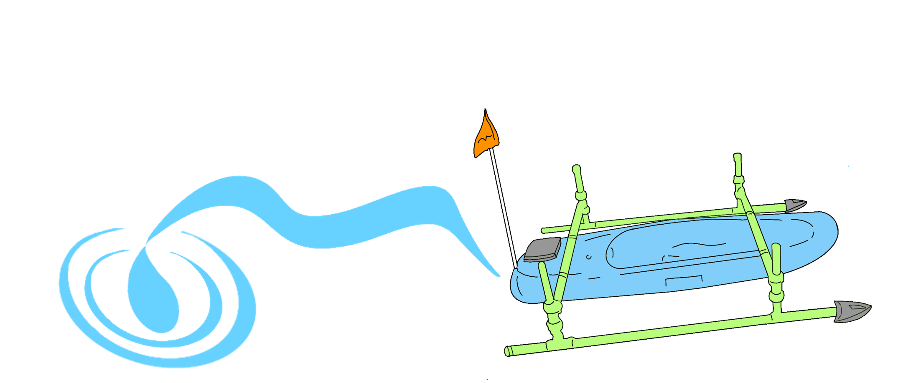

Augusta RAGU Lab
Projects
Home
Members
Projects
Autonomous Surface Vehicle

Notebook 1
Table of Contents
Arduino MKR 1310 Board
BNO055 Testing
DFRobot GNSS
Standalone GNSS Data Logger
Level Shifting MOSFET
Programming the ALS31313 I2C Address
Reyax RYS8839 NMEA Parsing and Logging
SparkFun ZED-F9P Logging
Setting Up an RTK Base and Rover System
BNO055 Relative Heading Observation
Blue Robotics T200 Underwater Thruster
Autonomous WIL
Writing an H-Bridge Library
Writing an ESC Library
Writing a GPS Library
Writing a BNO Library
Writing a Controller Library
Fixing the Arc
Writing a Heading Control Library
Putting It All Together: Land & Water
Notebook 2
Table of Contents
Land Testing
Walking at Lake Olmstead
The Better Figure 8
Canal Testing
MB1005 Parksonar Sensor
Lidar for Object Detection
Land Testing with Lidar
Revisiting the BNO055
Fixing the Negative Heading
Revisiting the SparkFun GPS
Logging and Plotting GPS Data on My Maps
Adding Timestamps from the SparkFun GPS
Integrating the New BNO and GPS Code
SparkFun GNSS with the Library
Design Notes
Battery Maintenance
Basics of SD Card
Surface Mount Soldering Notes
DOpTC Integration with Arduino Giga
1-Wire Digital Thermometer DS1B20
Introduction to Particle Functions and Variables
Reading DOpTC Faster
DOpTC I2C Bus Integration
Reading the Number of Available Bytes (ZED-F9P)
Notes on the UBX Protocol for the ZED-F9P
Reading NAV-PVT on the ZED-F9P Without a Library
KiCad Workflow
Processing the NAV-PVT Message on ZED-F9P
Using u-center to Configure the ZED-F9P
Loft, Shell, and Boolean Tools in Onshape for Remote Control
Fitting Data with GNUPlot and Matplotlib
Eco Test at Lake Olmstead
Notes on Floats
Serial Radio Basics
Serial Radio Advanced
CNC Basics – V-Carve